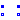

Modelica.Electrical.Spice3.Interfaces.TwoPortControlledSources
Modelica.Electrical.Spice3.Interfaces.TwoPortControlledSources
The SPICE3 package uses the Modelica.Electrical.Analog interfaces. Only special partial models used in the SPICE3 package are located in this Interfaces package.
Extends from Modelica.Icons.InterfacesPackage (Icon for packages containing interfaces).
| Name | Description |
|---|---|
|  TwoPortControlledSources | Component with two electrical ports, including current |
Modelica.Electrical.Spice3.Interfaces.TwoPortControlledSources

TwoPort is a partial model that consists of two ports. It is assumed that the current flowing into the positive pin is identical to the current flowing out of pin n. This currents of each port are provided explicitly as currents i1 and i2, the voltages respectively as v1 and v2.
| Type | Name | Description |
|---|---|---|
| PositivePin | p1 | Positive pin of the controlling port |
| NegativePin | n1 | Negative pin of the controlling port |
| PositivePin | p2 | Positive pin of the controlled port |
| NegativePin | n2 | Negative pin of the controlled port |
partial model TwoPortControlledSources "Component with two electrical ports, including current" SI.Voltage v1 "Voltage drop over the controlling port"; SI.Voltage v2 "Voltage drop over the controlled port"; SI.Current i1 "Current flowing from pos. to neg. pin of the controlling port"; SI.Current i2 "Current flowing from pos. to neg. pin of the controlled port";Modelica.Electrical.Analog.Interfaces.PositivePin p1 "Positive pin of the controlling port"; Modelica.Electrical.Analog.Interfaces.NegativePin n1 "Negative pin of the controlling port"; Modelica.Electrical.Analog.Interfaces.PositivePin p2 "Positive pin of the controlled port"; Modelica.Electrical.Analog.Interfaces.NegativePin n2 "Negative pin of the controlled port"; equation v1 = p1.v - n1.v; v2 = p2.v - n2.v; 0 = p1.i + n1.i; 0 = p2.i + n2.i; i1 = p1.i; i2 = p2.i;end TwoPortControlledSources;